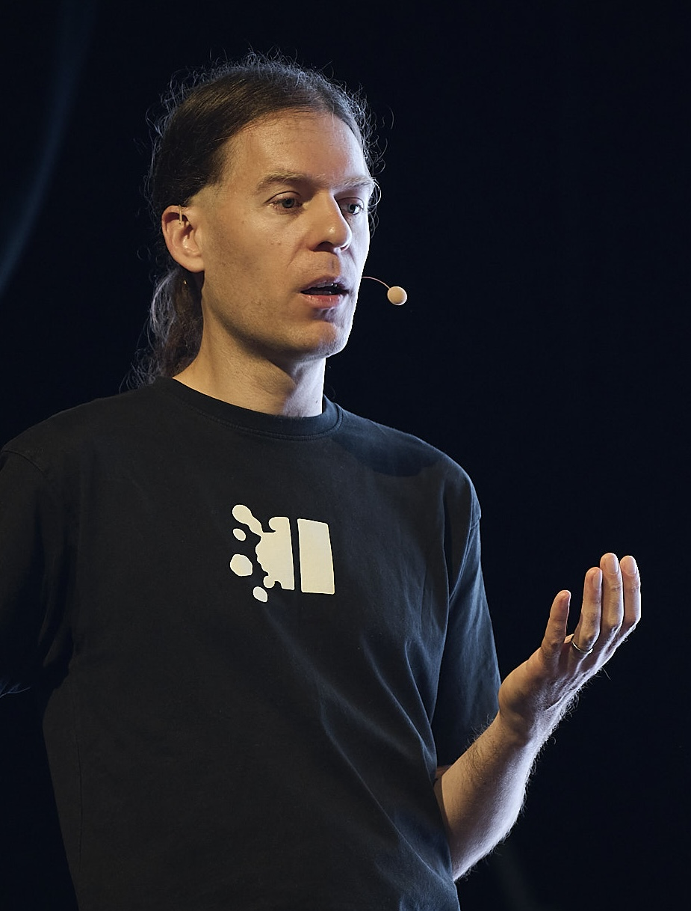

My book

My book, Designing Data-Intensive Applications, has received thousands of five-star reviews.
I supervise student projects in my area of research at all levels: Part II, MPhil/Part III, and PhD. If you’re bright, motivated, and excited about the topics below, come join my research group!
I’m a new associate professor, having started only in 2024, but I have a fair bit of experience supervising student projects:
I’ve also examined 7 PhD theses, 8 master’s dissertations, and dozens of undergraduate dissertations, so I think I know what a good thesis looks like.
The overarching theme of my research is decentralisation of Internet services: that is, trying to move beyond the dominance of a few big tech companies, and towards models where users have better control over their own data. Concretely, I’m working on:
My approach to research:
As your supervisor, I will help you refine a project idea and provide guidance to make your project successful, but you’ll also have the freedom to choose your own path. I’ll try my best to answer your questions and unblock you if you’re stuck. I will help you get good at writing and presenting your ideas.
Please note that I advise students at other universities only in very exceptional cases. Sorry, there just aren’t enough hours in the day.

Photo from Local First Conf 2026
My book, Designing Data-Intensive Applications, has received thousands of five-star reviews.
 Unless otherwise specified, all content on this site is licensed under a
Creative Commons
Attribution 3.0 Unported License.
Theme borrowed from
Carrington,
ported to Jekyll by Martin Kleppmann.
Unless otherwise specified, all content on this site is licensed under a
Creative Commons
Attribution 3.0 Unported License.
Theme borrowed from
Carrington,
ported to Jekyll by Martin Kleppmann.